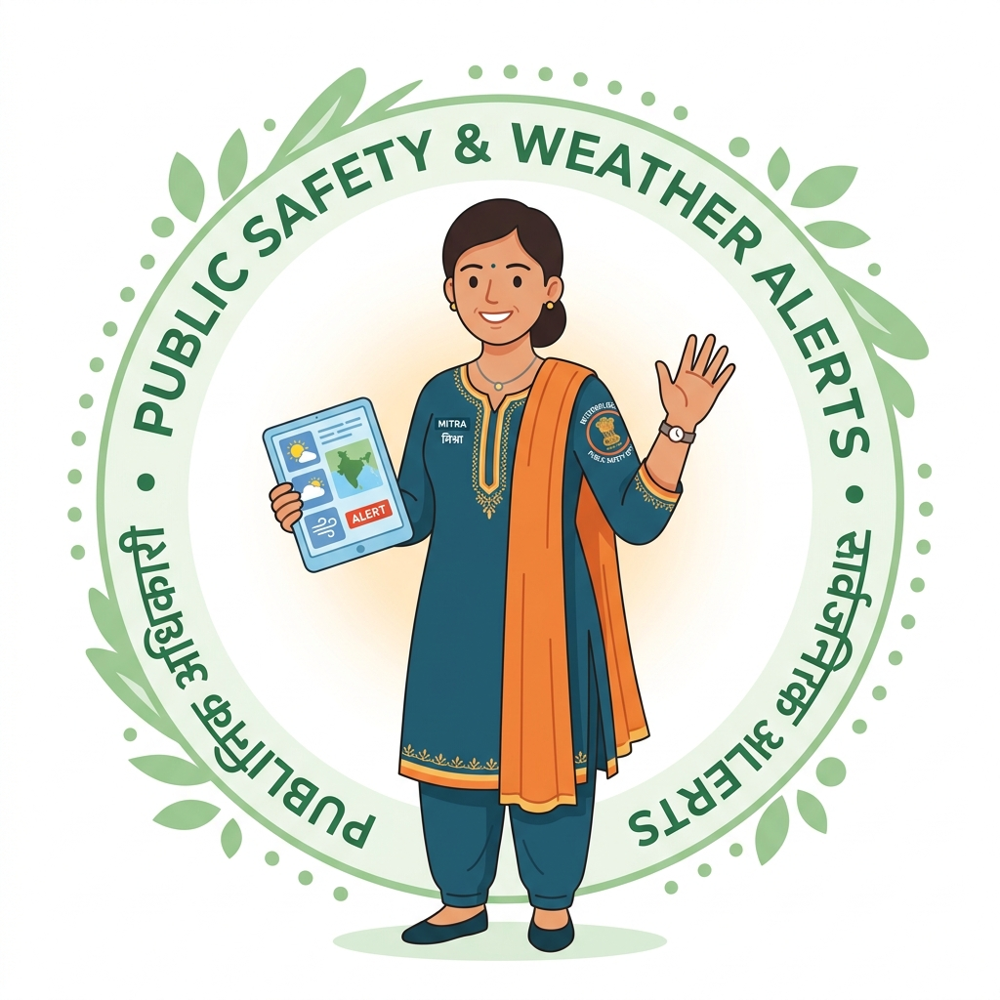

DWR Radar Network
Lightning Strokes (15m)
Active Nowcast Alerts
Refresh Cadence
Core Features
Mission-critical early warning capabilities for disaster authorities, farmers, and aviation.

Smt. Vayu-Mitra
IMD Meteorological Safety & Citizen Advisory Officer
Agriculture & Farmer Nowcast
PM-KISAN • Meghdoot & DAMINI sync • 30-30 lightning safety rule • Village level alert
Doppler Weather Radar (DWR) 17 Mosaic
Cross-Attention AI • 0-3h Nowcasting • 150km scan overlap • QC clutter removal
Citizen Welfare & Disaster Management
NDMA CAP protocol • Red/Orange/Yellow SMS broadcast • 24/7 Helpline 1078 & 112
All-India Interactive Doppler Radar & Nowcast Map
Click anywhere on the map of India to inspect live atmospheric instability (CAPE), rain rate, wind speed, and lightning risk.
IMD Doppler Weather Radar Network (17 Stations)
Nationwide dual-polarization S-band, C-band, and X-band radars with 150km core and 250km surveillance ranges.
About Minutes Ahead
AI/ML Based Nowcasting for Ministry of Earth Sciences & India Meteorological Department
Smart India Hackathon Problem Statement
"AI/ML based Nowcasting of thunderstorm and lightning using atmospheric observations including multiple radars, satellite, lightning and model data."
India suffers thousands of tragic lightning casualties every year, especially during pre-monsoon nor'westers (Kalbaishakhi) and active monsoon convection. Traditional Numerical Weather Prediction (NWP) runs every 6–12 hours on coarse 10 km grids, which is far too slow and coarse to warn farmers and citizens about micro-scale storm cells that explode and dissipate within 45 to 90 minutes.
Minutes Ahead provides 0–3 hour high-resolution (2 km grid) nowcasts refreshed every 5–10 minutes using multi-modal sensor fusion.
Why Optical Flow Fails & Our AI Solution
Conventional radar nowcasting uses optical flow (tracking cloud vectors). This fundamentally fails because:
- Convective Initiation: Cannot predict where new thunderstorms will form out of clear skies.
- Rapid Growth & Decay: Cannot model intense updrafts or downdrafts that collapse cells.
- Radar Clutter & Blind Spots: Topographic blockage in Himalayan & Ghat terrains causes false echoes.
Our Solution: A Cross-Attention Deep Learning architecture that fuses 3D Doppler Radar reflectivities with INSAT-3DR Rapid Scan infrared cloud-top cooling and ground lightning stroke density.
Multi-Modal Sensor Fusion Pipeline
- Doppler Weather Radars (17 DWRs): Quality-controlled 3D reflectivity cubes (Z, ZDR, KDP) mosaicked across overlapping scan zones.
- INSAT-3DR Geostationary Satellite: Thermal IR (10.8 µm) cloud-top temperature cooling rates (> -2°C / 10 min indicates convective burst).
- Lightning Detection Network (LLDN): Total lightning strokes (intra-cloud + cloud-to-ground) providing 15-30 minute advance lead time before rain onset.
- NWP Atmospheric Soundings: Convective Available Potential Energy (CAPE), Lifted Index (LI), and precipitable water vapour.
Validated Performance Metrics
- Critical Success Index (CSI): 0.68 at +60 min (vs 0.41 for classical optical flow).
- Probability of Detection (POD): 89.2% for severe convective initiation.
- False Alarm Ratio (FAR): Reduced to 14.8% via dual-polarization clutter suppression.
- Inference Latency: 42 seconds for all-India 2 km grid mosaic on standard hardware.